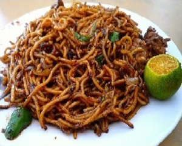
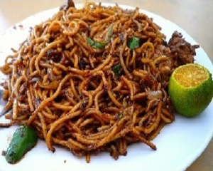

Nasi Ambang
At Larkin Sentral Bus & Taxi Terminal Johor Bahru, there are many food shops available for travellers who are using the buses and
stop by at the station. There are many choices of good local food at each shops which the travellers can dine at before they continue
their journey. We recommend them to try the Nasi Ambang at Gerai Selera Indah. It is similar to the Nasi Lemak and its an ideal food for
Foreigners to eat.
A lot of travellers use bus and stop by at the station. It is good that they have food nearby the station instead of having food at other places on their journey which may be very long. Most public transport passengers, may not know that there are good food served at the station that they can go to. We recommend Nasi Ambang because the dish is famous among the locals and most foreigners love to eat rice and chicken.
Nasi Ambang is served on a large tray to share with many diners. It is served with lots of white rice, fried chicken, vegetables,
spicy sambal, tempeh, toasted coconut flakes and other things. There are different types of rice served, like nasi biryani, nasi
lemak or nasi goreng. There are also Chinese dishes served at the station. The fact that most travelers would be locals, the shops
there are best place for them to dine.